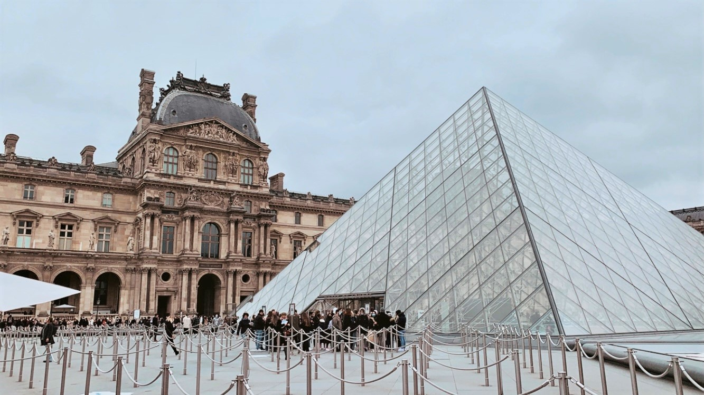

My experience in art comes from the top-notch college course Foundations of Western Art, taught by Prof. Anina Moriarty, as well as from my wonderful journeys around the world. I have traveled to 25 countries, and have visited some of the finest museums around the globe. Some of these include: |
|
- Musee du Louvre, Paris, France
- Museo del Prado, Madrid, Spain
- Museo Reina Sofia, Madrid, Spain
- Rijksmuseum, Amsterdam, Netherlands
- Museum Van Gogh, Amsterdam, Netherlands
- Depot Bojimans van Beuningen, Rotterdam, Netherlands
- Mauritshuis, Den Haag, Netherlands
- Museum de Fundatie, Zwolle, Netherlands
- The Hermitage Museum, St. Petersburg, Russia
- The Vatican, Rome, Italy
- The British Museum, London, England
- Museum of Fine Arts, Boston, USA
- Isabella Stewart Garden Museum, Boston, USA
- Harvard Art Museums, Cambridge, USA
- Davis Museum, Wellesley, USA
- Museo JUMEX, Mexico City, Mexico
- Museo Soumaya, Mexico City, Mexico
|
 |